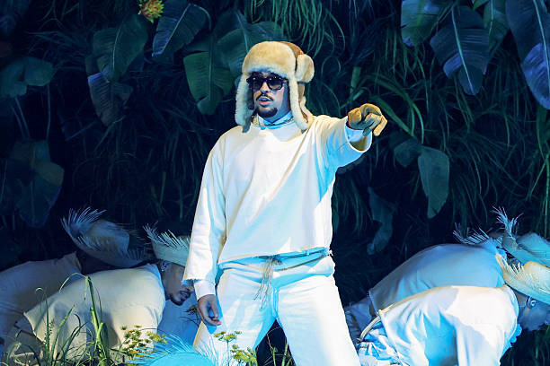
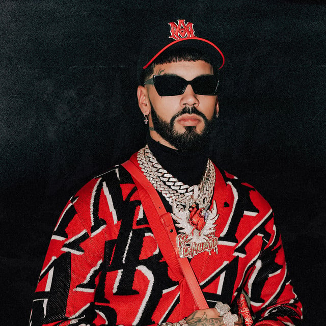
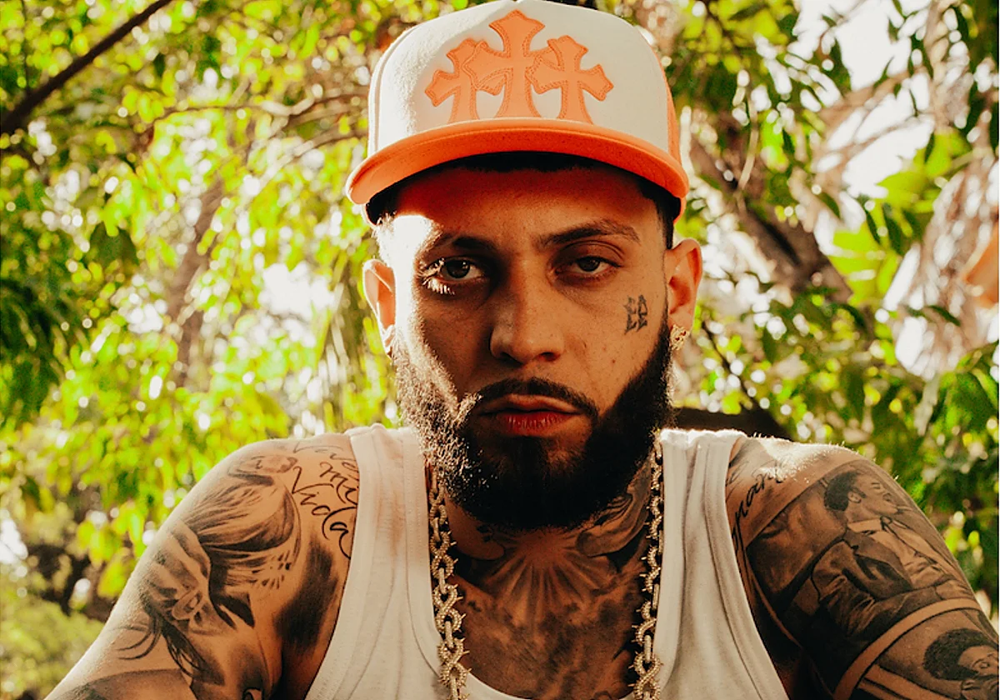

Bad Bunny es un cantante y compositor puertorriqueño. Comenzó publicando trap en internet y hoy es uno de los artistas más escuchados del mundo, con una música que mezcla trap, reguetón y otros géneros latinos.
Actuación: lunes a las 23:30 h en el escenario principal. Cerrará el festival con un espectáculo de dos horas con puesta en escena a gran escala

Anuel AA es un rapero y cantante puertorriqueño, uno de los pioneros del trap latino. Su álbum Real Hasta La Muerte lo consolidó como referente del género, con un estilo de letras crudas y ritmos oscuros que combina con reguetón y melodías muy pegadizas.
Actuación: domingo a las 22:00 h en el escenario principal. Ofrecerá un concierto de una hora y media con un repaso a sus temas más conocidos.

JC Reyes es un rapero y cantante de Sevilla que mezcla trap y reguetón con toques de flamenco. Se dio a conocer con temas como 34 Amor y Mafia y ha colaborado con artistas como De La Ghetto en Fardos o con Saiko y Dei V en BadGyal.
Actuacion: lunes a las 2:00h en el escenario principal. Será un concierto de 75 minutos con sus mayores éxitos y colaboraciones.